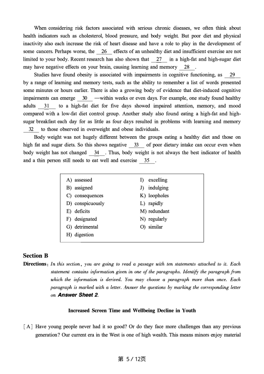
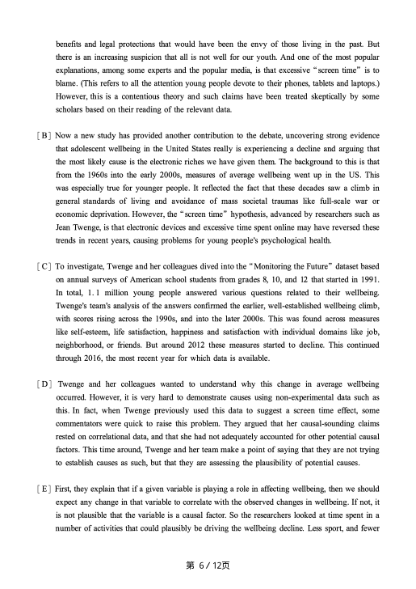
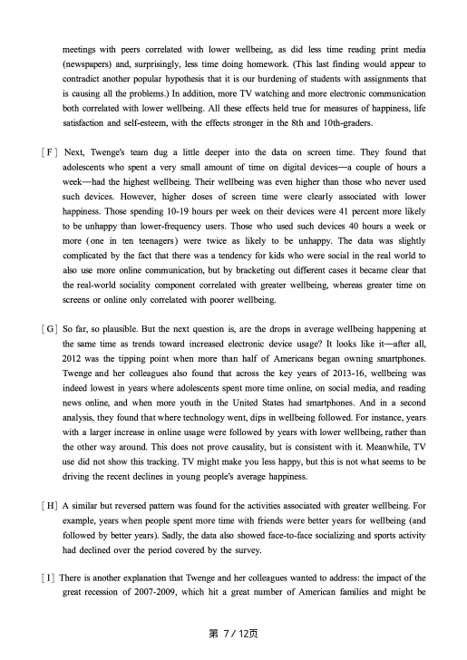
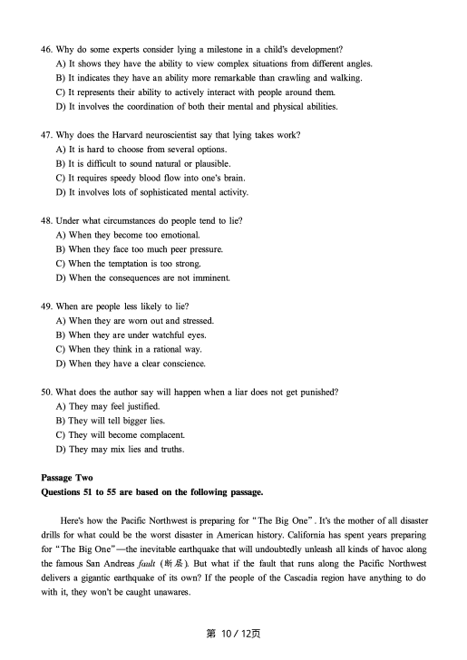

第 1 / 12 页

Part II
Listening Comprehension
(30 minutes)
Section A
Directions : In this section , you will hear two long conversations. At the end of each conversation , you
will hear four questions. Both the conversation and the question will be spoken only once.
After you hear a question , you must choose the best answer from the four choices marked
A ) , B ) , C ) and D ) . Then mark the corresponding letter on Answer Sheet 1 with a
single line through the centre.
Questions 1 to 4 are based on the conversation you have just heard.
1 . A) Magazine reporter.
C) Website designer.
B) Fashion designer.
D) Features editor.
2. A) Designing sports clothing.
C) Answering daily emails.
B) Consulting fashion experts.
D) Interviewing job-seekers.
3. A) It is challenging.
C) It is tiresome.
B) It is fascinating.
D) It is fashionable.
4. A) Her persistence.
C) Her competence.
B) Her experience.
D) Her confidence.
Questions 5 to 8 are based on the conversation you have just heard.
5. A) It is enjoyable.
B) It is educational.
C) It is divorced from real life.
D) It is adapted from a drama.
6. A) All the roles are played by famous actors and actresses.
B) It is based on the real-life experiences of some celebrities.
C) Its plots and events reveal a lot about Frankie's actual life.
D) It is written, directed, edited and produced by Frankie himself.
7. A) Go to the theater and enjoy it.
B) Recommend it to her friends.
C) Watch it with the man.
D) Download and watch it.
2019年12月英语六级考试试题第1套
第 1／12页
查看 / 复制本页文字
Part II Listening Comprehension (30 minutes) Section A Directions : In this section , you will hear two long conversations. At the end of each conversation , you will hear four questions. Both the conversation and the question will be spoken only once. After you hear a question , you must choose the best answer from the four choices marked A ) , B ) , C ) and D ) . Then mark the corresponding letter on Answer Sheet 1 with a single line through the centre. Questions 1 to 4 are based on the conversation you have just heard. 1 . A) Magazine reporter. C) Website designer. B) Fashion designer. D) Features editor. 2. A) Designing sports clothing. C) Answering daily emails. B) Consulting fashion experts. D) Interviewing job-seekers. 3. A) It is challenging. C) It is tiresome. B) It is fascinating. D) It is fashionable. 4. A) Her persistence. C) Her competence. B) Her experience. D) Her confidence. Questions 5 to 8 are based on the conversation you have just heard. 5. A) It is enjoyable. B) It is educational. C) It is divorced from real life. D) It is adapted from a drama. 6. A) All the roles are played by famous actors and actresses. B) It is based on the real-life experiences of some celebrities. C) Its plots and events reveal a lot about Frankie's actual life. D) It is written, directed, edited and produced by Frankie himself. 7. A) Go to the theater and enjoy it. B) Recommend it to her friends. C) Watch it with the man. D) Download and watch it. 2019年12月英语六级考试试题第1套 第 1／12页
第 2 / 12 页
8. A) It has drawn criticisms from scientists.
B) It has been showing for over a decade.
C) It is a ridiculous piece of satire.
D) It is against common sense.
Section B
Directions : In this section , you will hear two passages. At the end of each passage , you will hear three
or four questions. Both the passage and the questions will be spoken only once. After you
hear a question , you must choose the best answer from the four choices marked A ) , B ) ,
C) and D ) . Then mark the corresponding letter on Answer Sheet 1 with a single line
through the centre.
Questions 9 to 11 are based on the passage you have just heard.
9. A) They are likely to get injured when moving too fast.
B) They believe in team spirit for good performance.
C) They need to keep moving to avoid getting hurt.
D) They have to learn how to avoid body contact.
10. A) They do not have many years to live after retirement.
B) They tend to live a longer life with early retirement.
C) They do not start enjoying life until full retirement.
D) They keep themselves busy even after retirement.
1 1 . A) It prevents us from worrying.
B) It slows down our aging process.
C) It enables us to accomplish more in life.
D) It provides us with more chances to learn.
Questions 12 to 15 are based on the passage you have just heard.
12. A) It tends to dwell upon their joyous experiences.
B) It wanders for almost half of their waking time.
C) It has trouble concentrating after a brain injury.
D) It tends to be affected by their negative feelings.
13. A) To find how happiness relates to daydreaming.
B) To observe how one's mind affects one's behavior.
C) To see why daydreaming impacts what one is doing.
D) To study the relation between health and daydreaming.
第 2／12页
查看 / 复制本页文字
8. A) It has drawn criticisms from scientists. B) It has been showing for over a decade. C) It is a ridiculous piece of satire. D) It is against common sense. Section B Directions : In this section , you will hear two passages. At the end of each passage , you will hear three or four questions. Both the passage and the questions will be spoken only once. After you hear a question , you must choose the best answer from the four choices marked A ) , B ) , C) and D ) . Then mark the corresponding letter on Answer Sheet 1 with a single line through the centre. Questions 9 to 11 are based on the passage you have just heard. 9. A) They are likely to get injured when moving too fast. B) They believe in team spirit for good performance. C) They need to keep moving to avoid getting hurt. D) They have to learn how to avoid body contact. 10. A) They do not have many years to live after retirement. B) They tend to live a longer life with early retirement. C) They do not start enjoying life until full retirement. D) They keep themselves busy even after retirement. 1 1 . A) It prevents us from worrying. B) It slows down our aging process. C) It enables us to accomplish more in life. D) It provides us with more chances to learn. Questions 12 to 15 are based on the passage you have just heard. 12. A) It tends to dwell upon their joyous experiences. B) It wanders for almost half of their waking time. C) It has trouble concentrating after a brain injury. D) It tends to be affected by their negative feelings. 13. A) To find how happiness relates to daydreaming. B) To observe how one's mind affects one's behavior. C) To see why daydreaming impacts what one is doing. D) To study the relation between health and daydreaming. 第 2／12页
第 3 / 12 页
14. A) It helps them make good decisions.
B) It helps them tap their potentials.
C) It contributes to their creativity.
D) It contributes to clear thinking.
15. A) Subjects with clear goals in mind outperformed those without clear goals.
B) The difference in performance between the two groups was insignificant.
C) Non-daydreamers were more focused on their tasks than daydreamers.
D) Daydreamers did better than non-daydreamers in task performance.
Section C
Directions : In this section , you will hear three recordings of lectures or talks followed by three or four
questions. The recordings will be played only once. After you hear a question , you must
choose the best answer from the four choices marked A ) , B ) , C) and D ) . Then mark the
corresponding letter on Answer Sheet 1 with a single line through the centre.
Questions 16 to 18 are based on the recording you have just heard.
16. A) They are the oldest buildings in Europe.
B) They are part of the Christian tradition.
C) They are renovated to attract tourists.
D) They are in worsening condition.
17. A) They have a history of 14 centuries.
B) They are 40 metres tall on average.
C) They are without foundations.
D) They consist of several storeys.
18. A) Wood was harmonious with nature.
B) Wooden buildings kept the cold out.
C) Timber was abundant in Scandinavia.
D) The Vikings liked wooden structures.
Questions 19 to 21 are based on the recording you have just heard.
19. A) Similarities between human babies and baby animals.
B) Cognitive features of different newly born mammals.
C) Adults' influence on children.
D) Abilities of human babies.
第 3／12页
查看 / 复制本页文字
14. A) It helps them make good decisions. B) It helps them tap their potentials. C) It contributes to their creativity. D) It contributes to clear thinking. 15. A) Subjects with clear goals in mind outperformed those without clear goals. B) The difference in performance between the two groups was insignificant. C) Non-daydreamers were more focused on their tasks than daydreamers. D) Daydreamers did better than non-daydreamers in task performance. Section C Directions : In this section , you will hear three recordings of lectures or talks followed by three or four questions. The recordings will be played only once. After you hear a question , you must choose the best answer from the four choices marked A ) , B ) , C) and D ) . Then mark the corresponding letter on Answer Sheet 1 with a single line through the centre. Questions 16 to 18 are based on the recording you have just heard. 16. A) They are the oldest buildings in Europe. B) They are part of the Christian tradition. C) They are renovated to attract tourists. D) They are in worsening condition. 17. A) They have a history of 14 centuries. B) They are 40 metres tall on average. C) They are without foundations. D) They consist of several storeys. 18. A) Wood was harmonious with nature. B) Wooden buildings kept the cold out. C) Timber was abundant in Scandinavia. D) The Vikings liked wooden structures. Questions 19 to 21 are based on the recording you have just heard. 19. A) Similarities between human babies and baby animals. B) Cognitive features of different newly born mammals. C) Adults' influence on children. D) Abilities of human babies. 第 3／12页
第 4 / 12 页
20. A) They can distinguish a happy tune from a sad one.
B) They love happy melodies more than sad ones.
C) They fall asleep easily while listening to music.
D) They are already sensitive to beats and rhythms.
21 . A) Infants' facial expressions.
B) Babies' emotions.
C) Babies' interaction with adults.
D) Infants' behaviors.
Questions 22 to 25 are based on the recording you have just heard.
22. A) It may harm the culture of today's workplace.
B) It may hinder individual career advancement.
C) It may result in unwillingness to take risks.
D) It may put too much pressure on team members.
23. A) They can hardly give expression to their original views.
B) They can become less motivated to do projects of their own.
C) They may find it hard to get their contributions recognized.
D) They may eventually lose their confidence and creativity.
24. A) They can enlarge their professional circle.
B) They can get chances to engage in research.
C) They can make the best use of their expertise.
D) They can complete the project more easily.
25. A) It may cause lots of arguments in a team.
B) It may prevent making a timely decision.
C) It may give rise to a lot of unnecessary expenses.
D) It may deprive a team of business opportunities.
Part III
Reading Comprehension
( 40 minutes)
Section A
Directions : In this section , there is a passage with ten blanks. You are required to select one word for
each blank from a list of choices given in a word bank following the passage. Read the
passage through carefully before making your choices. Each choice in the bank is identified
by a letter. Please mark the corresponding letter for each item on Answer Sheet 2 with a
single line through the centre. You may not use any of the words in the bank more than once.
第 4／12页
查看 / 复制本页文字
20. A) They can distinguish a happy tune from a sad one. B) They love happy melodies more than sad ones. C) They fall asleep easily while listening to music. D) They are already sensitive to beats and rhythms. 21 . A) Infants' facial expressions. B) Babies' emotions. C) Babies' interaction with adults. D) Infants' behaviors. Questions 22 to 25 are based on the recording you have just heard. 22. A) It may harm the culture of today's workplace. B) It may hinder individual career advancement. C) It may result in unwillingness to take risks. D) It may put too much pressure on team members. 23. A) They can hardly give expression to their original views. B) They can become less motivated to do projects of their own. C) They may find it hard to get their contributions recognized. D) They may eventually lose their confidence and creativity. 24. A) They can enlarge their professional circle. B) They can get chances to engage in research. C) They can make the best use of their expertise. D) They can complete the project more easily. 25. A) It may cause lots of arguments in a team. B) It may prevent making a timely decision. C) It may give rise to a lot of unnecessary expenses. D) It may deprive a team of business opportunities. Part III Reading Comprehension ( 40 minutes) Section A Directions : In this section , there is a passage with ten blanks. You are required to select one word for each blank from a list of choices given in a word bank following the passage. Read the passage through carefully before making your choices. Each choice in the bank is identified by a letter. Please mark the corresponding letter for each item on Answer Sheet 2 with a single line through the centre. You may not use any of the words in the bank more than once. 第 4／12页
第 5 / 12 页

When considering risk factors associated with senous chronic diseases, we often think about
health indicators such as cholesterol, blood pressure, and body weight. But poor diet and physical
inactivity also each increase the risk of heart disease and have a role to play in the development of
some cancers. Perhaps worse, the
26
effects of an unhealthy diet and insufficient exercise are not
limited to your body. Recent research has also shown that
27
in a high-fat and high-sugar diet
may have negative effects on your brain, causing learning and memory
28
Studies have found obesity is associated with impainnents in cognitive functioning, as
29
by a range of learning and memory tests, such as the ability to remember a list of words presented
some minutes or hours earlier. There is also a growing body of evidence that diet-induced cognitive
impainnents can emerge
30
-within weeks or even days. For example, one study found healthy
adults
3 1
to a high-fat diet for five days showed impaired attention, memory, and mood
compared with a low-fat diet control group. Another study also found eating a high-fat and high
sugar breakfast each day for as little as four days resulted in problems with learning and memory
32
to those observed in overweight and obese individuals.
Body weight was not hugely different between the groups eating a healthy diet and those on
high fat and sugar diets. So this shows negative
33
of poor dietary intake can occur even when
body weight has not changed
34
. Thus, body weight is not always the best indicator of health
and a thin person still needs to eat well and exercise
35
A) assessed
I)
excelling
B) assigned
J)
indulging
C) consequences
K) loopholes
D) conspicuously
L) rapidly
E) deficits
M) redundant
F) designated
N) regularly
G) detrimental
0) similar
H) digestion
Section B
Directions : In this section , you are going to read a passage with ten statements attached to it. Each
statement contains information given in one of the paragraphs. Identify the paragraph from
which the information is derived. You may choose a paragraph more than once. Each
paragraph is marked with a letter. Answer the questions by marking the corresponding letter
on Answer Sheet 2.
Increased Screen Time and Wellbeing Decline in Youth
[ A] Have young people never had it so good? Or do they face more challenges than any previous
generation? Our current era in the West is one of high wealth. This means minors enjoy material
第 5／12页
查看 / 复制本页文字
When considering risk factors associated with senous chronic diseases, we often think about health indicators such as cholesterol, blood pressure, and body weight. But poor diet and physical inactivity also each increase the risk of heart disease and have a role to play in the development of some cancers. Perhaps worse, the 26 effects of an unhealthy diet and insufficient exercise are not limited to your body. Recent research has also shown that 27 in a high-fat and high-sugar diet may have negative effects on your brain, causing learning and memory 28 Studies have found obesity is associated with impainnents in cognitive functioning, as 29 by a range of learning and memory tests, such as the ability to remember a list of words presented some minutes or hours earlier. There is also a growing body of evidence that diet-induced cognitive impainnents can emerge 30 -within weeks or even days. For example, one study found healthy adults 3 1 to a high-fat diet for five days showed impaired attention, memory, and mood compared with a low-fat diet control group. Another study also found eating a high-fat and high sugar breakfast each day for as little as four days resulted in problems with learning and memory 32 to those observed in overweight and obese individuals. Body weight was not hugely different between the groups eating a healthy diet and those on high fat and sugar diets. So this shows negative 33 of poor dietary intake can occur even when body weight has not changed 34 . Thus, body weight is not always the best indicator of health and a thin person still needs to eat well and exercise 35 A) assessed I) excelling B) assigned J) indulging C) consequences K) loopholes D) conspicuously L) rapidly E) deficits M) redundant F) designated N) regularly G) detrimental 0) similar H) digestion Section B Directions : In this section , you are going to read a passage with ten statements attached to it. Each statement contains information given in one of the paragraphs. Identify the paragraph from which the information is derived. You may choose a paragraph more than once. Each paragraph is marked with a letter. Answer the questions by marking the corresponding letter on Answer Sheet 2. Increased Screen Time and Wellbeing Decline in Youth [ A] Have young people never had it so good? Or do they face more challenges than any previous generation? Our current era in the West is one of high wealth. This means minors enjoy material 第 5／12页
第 6 / 12 页

benefits and legal protections that would have been the envy of those living in the past. But
there is an increasing suspicion that all is not well for our youth. And one of the most popular
explanations, among some experts and the popular media, is that excessive " screen time" is to
blame. (This refers to all the attention young people devote to their phones, tablets and laptops.)
However, this is a contentious theory and such claims have been treated skeptically by some
scholars based on their reading of the relevant data.
[ B] Now a new study has provided another contribution to the debate, uncovering strong evidence
that adolescent wellbeing in the United States really is experiencing a decline and arguing that
the most likely cause is the electronic riches we have given them. The background to this is that
from the 1960s into the early 2000s, measures of average wellbeing went up in the US. This
was especially true for younger people. It reflected the fact that these decades saw a climb in
general standards of living and avoidance of mass societal traumas like full-scale war or
economic deprivation. However, the " screen time" hypothesis, advanced by researchers such as
Jean Twenge, is that electronic devices and excessive time spent online may have reversed these
trends in recent years, causing problems for young people's psychological health.
[ C] To investigate, Twenge and her colleagues dived into the " Monitoring the Future" dataset based
on annual surveys of American school students from grades 8, 10, and 12 that started in 1991.
In total, 1 . 1 million young people answered various questions related to their wellbeing.
Twenge's team's analysis of the answers confinned the earlier, well-established wellbeing climb,
with scores rising across the 1990s, and into the later 2000s. This was found across measures
like self-esteem, life satisfaction, happiness and satisfaction with individual domains like job,
neighborhood, or friends. But around 2012 these measures started to decline. This continued
through 2016, the most recent year for which data is available.
[ D ] Twenge and her colleagues wanted to understand why this change in average wellbeing
occurred. However, it is very hard to demonstrate causes using non-experimental data such as
this. In fact, when Twenge previously used this data to suggest a screen time effect, some
commentators were quick to raise this problem. They argued that her causal-sounding claims
rested on correlational data, and that she had not adequately accounted for other potential causal
factors. This time around, Twenge and her team make a point of saying that they are not trying
to establish causes as such, but that they are assessing the plausibility of potential causes.
[ E ] First, they explain that if a given variable is playing a role in affecting wellbeing, then we should
expect any change in that variable to correlate with the observed changes in wellbeing. If not, it
is not plausible that the variable is a causal factor. So the researchers looked at time spent in a
number of activities that could plausibly be driving the wellbeing decline. Less sport, and fewer
第 6／12页
查看 / 复制本页文字
benefits and legal protections that would have been the envy of those living in the past. But there is an increasing suspicion that all is not well for our youth. And one of the most popular explanations, among some experts and the popular media, is that excessive " screen time" is to blame. (This refers to all the attention young people devote to their phones, tablets and laptops.) However, this is a contentious theory and such claims have been treated skeptically by some scholars based on their reading of the relevant data. [ B] Now a new study has provided another contribution to the debate, uncovering strong evidence that adolescent wellbeing in the United States really is experiencing a decline and arguing that the most likely cause is the electronic riches we have given them. The background to this is that from the 1960s into the early 2000s, measures of average wellbeing went up in the US. This was especially true for younger people. It reflected the fact that these decades saw a climb in general standards of living and avoidance of mass societal traumas like full-scale war or economic deprivation. However, the " screen time" hypothesis, advanced by researchers such as Jean Twenge, is that electronic devices and excessive time spent online may have reversed these trends in recent years, causing problems for young people's psychological health. [ C] To investigate, Twenge and her colleagues dived into the " Monitoring the Future" dataset based on annual surveys of American school students from grades 8, 10, and 12 that started in 1991. In total, 1 . 1 million young people answered various questions related to their wellbeing. Twenge's team's analysis of the answers confinned the earlier, well-established wellbeing climb, with scores rising across the 1990s, and into the later 2000s. This was found across measures like self-esteem, life satisfaction, happiness and satisfaction with individual domains like job, neighborhood, or friends. But around 2012 these measures started to decline. This continued through 2016, the most recent year for which data is available. [ D ] Twenge and her colleagues wanted to understand why this change in average wellbeing occurred. However, it is very hard to demonstrate causes using non-experimental data such as this. In fact, when Twenge previously used this data to suggest a screen time effect, some commentators were quick to raise this problem. They argued that her causal-sounding claims rested on correlational data, and that she had not adequately accounted for other potential causal factors. This time around, Twenge and her team make a point of saying that they are not trying to establish causes as such, but that they are assessing the plausibility of potential causes. [ E ] First, they explain that if a given variable is playing a role in affecting wellbeing, then we should expect any change in that variable to correlate with the observed changes in wellbeing. If not, it is not plausible that the variable is a causal factor. So the researchers looked at time spent in a number of activities that could plausibly be driving the wellbeing decline. Less sport, and fewer 第 6／12页
第 7 / 12 页

meetings with peers correlated with lower wellbeing, as did less time reading print media
(newspapers) and, surprisingly, less time doing homework. (This last finding would appear to
contradict another popular hypothesis that it is our burdening of students with assignments that
is causing all the problems.) In addition, more TV watching and more electronic communication
both correlated with lower wellbeing. All these effects held true for measures of happiness, life
satisfaction and self-esteem, with the effects stronger in the 8th and lOth-graders.
[ F ] Next, Twenge's team dug a little deeper into the data on screen time. They found that
adolescents who spent a very small amount of time on digital devices-a couple of hours a
week-had the highest wellbeing. Their wellbeing was even higher than those who never used
such devices. However, higher doses of screen time were clearly associated with lower
happiness. Those spending 10-19 hours per week on their devices were 41 percent more likely
to be unhappy than lower-frequency users. Those who used such devices 40 hours a week or
more ( one in ten teenagers) were twice as likely to be unhappy. The data was slightly
complicated by the fact that there was a tendency for kids who were social in the real world to
also use more online communication, but by bracketing out different cases it became clear that
the real-world sociality component correlated with greater wellbeing, whereas greater time on
screens or online only correlated with poorer wellbeing.
[ G] So far, so plausible. But the next question is, are the drops in average wellbeing happening at
the same time as trends toward increased electronic device usage? It looks like it-after all,
2012 was the tipping point when more than half of Americans began owning smartphones.
Twenge and her colleagues also found that across the key years of 2013-16, wellbeing was
indeed lowest in years where adolescents spent more time online, on social media, and reading
news online, and when more youth in the United States had smartphones. And in a second
analysis, they found that where technology went, dips in wellbeing followed. For instance, years
with a larger increase in online usage were followed by years with lower wellbeing, rather than
the other way around. This does not prove causality, but is consistent with it. Meanwhile, TV
use did not show this tracking. TV might make you less happy, but this is not what seems to be
driving the recent declines in young people's average happiness.
[ HJ A similar but reversed pattern was found for the activities associated with greater wellbeing. For
example, years when people spent more time with friends were better years for wellbeing ( and
followed by better years). Sadly, the data also showed face-to-face socializing and sports activity
had declined over the period covered by the survey.
[ I] There is another explanation that Twenge and her colleagues wanted to address: the impact of the
great recession of 2007-2009, which hit a great number of American families and might be
第 7／12页
查看 / 复制本页文字
meetings with peers correlated with lower wellbeing, as did less time reading print media (newspapers) and, surprisingly, less time doing homework. (This last finding would appear to contradict another popular hypothesis that it is our burdening of students with assignments that is causing all the problems.) In addition, more TV watching and more electronic communication both correlated with lower wellbeing. All these effects held true for measures of happiness, life satisfaction and self-esteem, with the effects stronger in the 8th and lOth-graders. [ F ] Next, Twenge's team dug a little deeper into the data on screen time. They found that adolescents who spent a very small amount of time on digital devices-a couple of hours a week-had the highest wellbeing. Their wellbeing was even higher than those who never used such devices. However, higher doses of screen time were clearly associated with lower happiness. Those spending 10-19 hours per week on their devices were 41 percent more likely to be unhappy than lower-frequency users. Those who used such devices 40 hours a week or more ( one in ten teenagers) were twice as likely to be unhappy. The data was slightly complicated by the fact that there was a tendency for kids who were social in the real world to also use more online communication, but by bracketing out different cases it became clear that the real-world sociality component correlated with greater wellbeing, whereas greater time on screens or online only correlated with poorer wellbeing. [ G] So far, so plausible. But the next question is, are the drops in average wellbeing happening at the same time as trends toward increased electronic device usage? It looks like it-after all, 2012 was the tipping point when more than half of Americans began owning smartphones. Twenge and her colleagues also found that across the key years of 2013-16, wellbeing was indeed lowest in years where adolescents spent more time online, on social media, and reading news online, and when more youth in the United States had smartphones. And in a second analysis, they found that where technology went, dips in wellbeing followed. For instance, years with a larger increase in online usage were followed by years with lower wellbeing, rather than the other way around. This does not prove causality, but is consistent with it. Meanwhile, TV use did not show this tracking. TV might make you less happy, but this is not what seems to be driving the recent declines in young people's average happiness. [ HJ A similar but reversed pattern was found for the activities associated with greater wellbeing. For example, years when people spent more time with friends were better years for wellbeing ( and followed by better years). Sadly, the data also showed face-to-face socializing and sports activity had declined over the period covered by the survey. [ I] There is another explanation that Twenge and her colleagues wanted to address: the impact of the great recession of 2007-2009, which hit a great number of American families and might be 第 7／12页
第 8 / 12 页
affecting adolescents. The dataset they used did not include economic data, so instead the
researchers looked at whether the 2013-16 well being decline was tracking economic indicators.
They found some evidence that some crude measures, like income inequality, correlated with
changes in wellbeing, but economic measures with a more direct impact, like family income and
unemployment rates (which put families into difficulties), had no relationship with wellbeing.
The researchers also note that the recession hit some years before we see the beginning of the
wellbeing drop, and before the steepest wellbeing decline, which occurred in 2013.
[ J ] The researchers conclude that electronic communication was the only adolescent activity that
increased at the same time psychological wellbeing declined. I suspect that some experts in the
field will be keen to address alternative explanations, such as unassessed variables playing a role
in the wellbeing decline. But the new work does go further than previous research and suggests
that screen time should still be considered a potential barrier to young people's flourishing.
36. The year when most Americans began using smartphones was identified as a turning point in
young Americans' level of happiness.
3 7. Scores in various wellbeing measures began to go downward among young Americans in recent
years.
38. Unfortunately, activities involving direct contact with people, which contributed to better
wellbeing, were found to be on the decline.
39. In response to past critics, Twenge and her co-researchers stress they are not trying to prove that
the use of digital devices reduces young people's wellbeing.
40. In the last few decades of the 20th century, living standards went up and economic depressions
were largely averted in the US.
41 . Contrary to popular belief, doing homework might add to students' wellbeing.
42. The author believes the researchers' new study has gone a step further regarding the impact of
screen time on wellbeing.
43. The researchers found that extended screen time makes young people less happy.
44. Data reveals that economic inequality rather than family income might affect people's wellbeing.
45. Too much screen time is widely believed to be the cause of unhappiness among today's young
people.
第 8／12页
查看 / 复制本页文字
affecting adolescents. The dataset they used did not include economic data, so instead the researchers looked at whether the 2013-16 well being decline was tracking economic indicators. They found some evidence that some crude measures, like income inequality, correlated with changes in wellbeing, but economic measures with a more direct impact, like family income and unemployment rates (which put families into difficulties), had no relationship with wellbeing. The researchers also note that the recession hit some years before we see the beginning of the wellbeing drop, and before the steepest wellbeing decline, which occurred in 2013. [ J ] The researchers conclude that electronic communication was the only adolescent activity that increased at the same time psychological wellbeing declined. I suspect that some experts in the field will be keen to address alternative explanations, such as unassessed variables playing a role in the wellbeing decline. But the new work does go further than previous research and suggests that screen time should still be considered a potential barrier to young people's flourishing. 36. The year when most Americans began using smartphones was identified as a turning point in young Americans' level of happiness. 3 7. Scores in various wellbeing measures began to go downward among young Americans in recent years. 38. Unfortunately, activities involving direct contact with people, which contributed to better wellbeing, were found to be on the decline. 39. In response to past critics, Twenge and her co-researchers stress they are not trying to prove that the use of digital devices reduces young people's wellbeing. 40. In the last few decades of the 20th century, living standards went up and economic depressions were largely averted in the US. 41 . Contrary to popular belief, doing homework might add to students' wellbeing. 42. The author believes the researchers' new study has gone a step further regarding the impact of screen time on wellbeing. 43. The researchers found that extended screen time makes young people less happy. 44. Data reveals that economic inequality rather than family income might affect people's wellbeing. 45. Too much screen time is widely believed to be the cause of unhappiness among today's young people. 第 8／12页
第 9 / 12 页
Section C
Directions : There are 2 passages in this section. Each passage is followed by some questions or
unfinished statements. For each of them there are four choices marked A ) , B ) , C) and
D ) . You should decide on the best choice and mark the corresponding letter on Answer
Sheet 2 with a single line through the centre.
Passage One
Questions 46 to 50 are based on the following passage.
" The dangerous thing about lying is people don't understand how the act changes us," says Dan
Ariely, behavioural psychologist at Duke University. Psychologists have documented children lying as
early as the age of two. Some experts even consider lying a developmental milestone, like crawling
and walking, because it requires sophisticated planning, attention and the ability to see a situation
from someone else's perspective to manipulate them. But, for most people, lying gets limited as we
develop a sense of morality and the ability to self-regulate.
Harvard cognitive neuroscientist Joshua Greene says, for most of us, lying takes work. In studies,
he gave study subjects a chance to deceive for monetary gain while examining their brains in a
functional MRI machine, which maps blood flow to active parts of the brain. Some people told the
truth instantly and instinctively. But others opted to lie, and they showed increased activity in their
frontal parietal (ߋM:,fl al.J) control network, which is involved in difficult or complex thinking. This
suggests that they were deciding between truth and dishonesty-and ultimately opting for the latter.
For a follow-up analysis, he found that people whose neural ( if ̆ al.J ) reward centres were more
active when they won money were also more likely to be among the group of liars-suggesting that
lying may have to do with the inability to resist temptation.
External conditions also matter in terms of when and how often we lie.We are more likely to lie,
research shows, when we are able to rationalise it, when we are stressed and fatigued or see others
being dishonest. And we are less likely to lie when we have moral reminders or when we think others
are watching. " We as a society need to understand that, when we don't punish lying, we increase the
probability it will happen again," Ariely says.
In a 2016 study published in the journal Nature Neuroscience, Ariely and colleagues showed how
dishonesty alters people's brains, making it easier to tell lies in the future. When people uttered a
falsehood, the scientists noticed a burst of activity in their arnygdala. The arnygdala is a crucial part of
the brain that produces fear, anxiety and emotional responses including that sinking, guilty feeling you
get when you lie. But when scientists had their subjects play a game-in which they won money by
deceiving their partner, they noticed the negative signals from the amygdala began to decrease. Not
only that, but when people faced no consequences for dishonesty, their falsehoods tended to get even
more sensational. This means that if you give people multiple opportunities to lie for their own
benefit, they start with little lies which get bigger over time.
第 9／12页
查看 / 复制本页文字
Section C Directions : There are 2 passages in this section. Each passage is followed by some questions or unfinished statements. For each of them there are four choices marked A ) , B ) , C) and D ) . You should decide on the best choice and mark the corresponding letter on Answer Sheet 2 with a single line through the centre. Passage One Questions 46 to 50 are based on the following passage. " The dangerous thing about lying is people don't understand how the act changes us," says Dan Ariely, behavioural psychologist at Duke University. Psychologists have documented children lying as early as the age of two. Some experts even consider lying a developmental milestone, like crawling and walking, because it requires sophisticated planning, attention and the ability to see a situation from someone else's perspective to manipulate them. But, for most people, lying gets limited as we develop a sense of morality and the ability to self-regulate. Harvard cognitive neuroscientist Joshua Greene says, for most of us, lying takes work. In studies, he gave study subjects a chance to deceive for monetary gain while examining their brains in a functional MRI machine, which maps blood flow to active parts of the brain. Some people told the truth instantly and instinctively. But others opted to lie, and they showed increased activity in their frontal parietal (ߋM:,fl al.J) control network, which is involved in difficult or complex thinking. This suggests that they were deciding between truth and dishonesty-and ultimately opting for the latter. For a follow-up analysis, he found that people whose neural ( if ̆ al.J ) reward centres were more active when they won money were also more likely to be among the group of liars-suggesting that lying may have to do with the inability to resist temptation. External conditions also matter in terms of when and how often we lie.We are more likely to lie, research shows, when we are able to rationalise it, when we are stressed and fatigued or see others being dishonest. And we are less likely to lie when we have moral reminders or when we think others are watching. " We as a society need to understand that, when we don't punish lying, we increase the probability it will happen again," Ariely says. In a 2016 study published in the journal Nature Neuroscience, Ariely and colleagues showed how dishonesty alters people's brains, making it easier to tell lies in the future. When people uttered a falsehood, the scientists noticed a burst of activity in their arnygdala. The arnygdala is a crucial part of the brain that produces fear, anxiety and emotional responses including that sinking, guilty feeling you get when you lie. But when scientists had their subjects play a game-in which they won money by deceiving their partner, they noticed the negative signals from the amygdala began to decrease. Not only that, but when people faced no consequences for dishonesty, their falsehoods tended to get even more sensational. This means that if you give people multiple opportunities to lie for their own benefit, they start with little lies which get bigger over time. 第 9／12页
第 10 / 12 页

46. Why do some experts consider lying a milestone in a child's development?
A) It shows they have the ability to view complex situations from different angles.
B) It indicates they have an ability more remarkable than crawling and walking.
C) It represents their ability to actively interact with people around them.
D) It involves the coordination of both their mental and physical abilities.
4 7. Why does the Harvard neuroscientist say that lying takes work?
A) It is hard to choose from several options.
B) It is difficult to sound natural or plausible.
C) It requires speedy blood flow into one's brain.
D) It involves lots of sophisticated mental activity.
48. Under what circumstances do people tend to lie?
A) When they become too emotional.
B) When they face too much peer pressure.
C) When the temptation is too strong.
D) When the consequences are not imminent.
49. When are people less likely to lie?
A) When they are worn out and stressed.
B) When they are under watchful eyes.
C) When they think in a rational way.
D) When they have a clear conscience.
50. What does the author say will happen when a liar does not get punished?
A) They may feel justified.
B) They will tell bigger lies.
C) They will become complacent.
D) They may mix lies and truths.
Passage Two
Questions 51 to 55 are based on the following passage.
Here's how the Pacific Northwest is preparing for " The Big One" . It's the mother of all disaster
drills for what could be the worst disaster in American history. California has spent years preparing
for " The Big One" -the inevitable earthquake that will undoubtedly unleash all kinds of havoc along
the famous San Andreas fault ( ߌ;;,, ). But what if the fault that runs along the Pacific Northwest
delivers a gigantic earthquake of its own? If the people of the Cascadia region have anything to do
with it, they won't be caught unawares.
第 10／12页
查看 / 复制本页文字
46. Why do some experts consider lying a milestone in a child's development? A) It shows they have the ability to view complex situations from different angles. B) It indicates they have an ability more remarkable than crawling and walking. C) It represents their ability to actively interact with people around them. D) It involves the coordination of both their mental and physical abilities. 4 7. Why does the Harvard neuroscientist say that lying takes work? A) It is hard to choose from several options. B) It is difficult to sound natural or plausible. C) It requires speedy blood flow into one's brain. D) It involves lots of sophisticated mental activity. 48. Under what circumstances do people tend to lie? A) When they become too emotional. B) When they face too much peer pressure. C) When the temptation is too strong. D) When the consequences are not imminent. 49. When are people less likely to lie? A) When they are worn out and stressed. B) When they are under watchful eyes. C) When they think in a rational way. D) When they have a clear conscience. 50. What does the author say will happen when a liar does not get punished? A) They may feel justified. B) They will tell bigger lies. C) They will become complacent. D) They may mix lies and truths. Passage Two Questions 51 to 55 are based on the following passage. Here's how the Pacific Northwest is preparing for " The Big One" . It's the mother of all disaster drills for what could be the worst disaster in American history. California has spent years preparing for " The Big One" -the inevitable earthquake that will undoubtedly unleash all kinds of havoc along the famous San Andreas fault ( ߌ;;,, ). But what if the fault that runs along the Pacific Northwest delivers a gigantic earthquake of its own? If the people of the Cascadia region have anything to do with it, they won't be caught unawares. 第 10／12页
第 11 / 12 页
The region is engaged in a multi-day earthquake-and-tsunami U t 1*) drill involving around
20,000 people. The Cascadia Rising drill gives area residents and emergency responders a chance to
practice what to do in case of a 9. 0-magnitude earthquake and tsunami along one of the nation's
dangerous-and underestimated-faults.
The Cascadia Earthquake Zone is big enough to compete with San Andreas (it's been called the
most dangerous fault in America), but it's much lesser known than its California cousin. Nearly 700
miles long, the earthquake zone is located by the North American Plate off the coast of Pacific British
Columbia, Washington, Oregon and Northern California.
Cascadia is what's known as a " megathrust " fault. Megathrusts are created in earthquake
zones-land plate boundaries where two plates converge. In the areas where one plate is beneath
another, stress builds up over time. During a megathrust event, all of that stress releases and some of
the world's most powerful earthquakes occur. Remember the 9.1 earthquake and tsunami in the Indian
Ocean off Sumatra in 2004? It was caused by a megathrust event as the India plate moved beneath
the Burma micro-plate.
The last time a major earthquake occurred along the Cascadia fault was in 1700, so officials
worry that another event could occur any time. To prevent that event from becoming a catastrophe,
first responders will join members of the public in rehearsals that involve communication, evacuation,
search and rescue, and other scenarios.
Thousands of casualties are expected if a 9. 0 earthquake were to occur. First, the earthquake
would shake metropolitan areas including Seattle and Portland. This could trigger a tsunami that
would create havoc along the coast. Not all casualties can necessarily be prevented-but by
coordinating across local, state, and even national borders, officials hope that the worst-case scenario
can be averted. On the exercise's website, officials explain that the report they prepare during this
rehearsal will inform disaster management for years to come.
For hundreds of thousands of Cascadia residents, " The Big One" isn't a question of if, only
when. And it's never too early to get ready for the inevitable.
5 1 . What does " The Big One" refer to?
A) A gigantic geological fault.
B) A large-scale exercise to prepare for disasters.
C) A massive natural catastrophe.
D) A huge tsunami on the California coast.
52. What is the purpose of the Cascadia Rising drill?
A) To prepare people for a major earthquake and tsunami.
B) To increase residents' awareness of imminent disasters.
C) To teach people how to adapt to post-disaster life.
D) To cope with the aftermath of a possible earthquake.
第 11／12页
查看 / 复制本页文字
The region is engaged in a multi-day earthquake-and-tsunami U t 1*) drill involving around 20,000 people. The Cascadia Rising drill gives area residents and emergency responders a chance to practice what to do in case of a 9. 0-magnitude earthquake and tsunami along one of the nation's dangerous-and underestimated-faults. The Cascadia Earthquake Zone is big enough to compete with San Andreas (it's been called the most dangerous fault in America), but it's much lesser known than its California cousin. Nearly 700 miles long, the earthquake zone is located by the North American Plate off the coast of Pacific British Columbia, Washington, Oregon and Northern California. Cascadia is what's known as a " megathrust " fault. Megathrusts are created in earthquake zones-land plate boundaries where two plates converge. In the areas where one plate is beneath another, stress builds up over time. During a megathrust event, all of that stress releases and some of the world's most powerful earthquakes occur. Remember the 9.1 earthquake and tsunami in the Indian Ocean off Sumatra in 2004? It was caused by a megathrust event as the India plate moved beneath the Burma micro-plate. The last time a major earthquake occurred along the Cascadia fault was in 1700, so officials worry that another event could occur any time. To prevent that event from becoming a catastrophe, first responders will join members of the public in rehearsals that involve communication, evacuation, search and rescue, and other scenarios. Thousands of casualties are expected if a 9. 0 earthquake were to occur. First, the earthquake would shake metropolitan areas including Seattle and Portland. This could trigger a tsunami that would create havoc along the coast. Not all casualties can necessarily be prevented-but by coordinating across local, state, and even national borders, officials hope that the worst-case scenario can be averted. On the exercise's website, officials explain that the report they prepare during this rehearsal will inform disaster management for years to come. For hundreds of thousands of Cascadia residents, " The Big One" isn't a question of if, only when. And it's never too early to get ready for the inevitable. 5 1 . What does " The Big One" refer to? A) A gigantic geological fault. B) A large-scale exercise to prepare for disasters. C) A massive natural catastrophe. D) A huge tsunami on the California coast. 52. What is the purpose of the Cascadia Rising drill? A) To prepare people for a major earthquake and tsunami. B) To increase residents' awareness of imminent disasters. C) To teach people how to adapt to post-disaster life. D) To cope with the aftermath of a possible earthquake. 第 11／12页
第 12 / 12 页
53. What happens in case of a megathrust earthquake according to the passage?
A) Two plates merge into one.
B) A variety of forces converge.
C) Boundaries blur between plates.
D) Enormous stress is released.
54. What do the officials hope to achieve through the drills?
A) Coordinating various disaster-relief efforts.
B) Reducing casualties in the event of a disaster.
C) Minimizing property loss caused by disasters.
D) Establishing disaster and emergency management.
55. What does the author say about " The Big One" ?
A) Whether it will occur remains to be seen.
B) How it will arrive is too early to predict.
C) Its occurrence is just a matter of time.
D) It keeps haunting Cascadia residents.
Part IV
Translation
(30 minutes)
Directions : For this part , you are allowed 30 minutes to translate a passage from Chinese into English.
You should write your answer on Answer Sheet 2.
Uft( peony) :.7:t'@.ffiml , ߍ̇r%'i:ft , ̇fiEߎ:fUf--"5ߏ5R , IEiffiliE 9'1 00ߐߑȤ " :.7:t9'1 ZE" o 9'1
OOWƙ!t!i1:ffȢtg:ff ;ffififi;f:JH±ft o "f s 1¥* , itlfF T Wƙic¥ߒ:fUߓilIDߔߕH±ft o Jl!HtatAA , ȣ±ft
ii:ߖ% lzfil ftlff :i!![ fifi ttJt÷1t ø 00 :.it , iEl ffiJ *rilU Jxtfi- o -tttt£2 at , rt ǒ13 ߗ:½xnx:Ȥ ȣ±ft!IG :I:ߘ 9'1, t., , ffiJ
_§3ߙ -:l:-!1!1iI-11:1ߚt!t¥U4-5co :E,m;(:E , J:&"f J:Jf l'f9 00 P3>'ߛvḧߜfffl¥U r! ǒ13ߝ.bo-1¥-Bt l'f9ȣ±:ft
ߞ , Mm-rt ǒ13 U:Ptl'f9a!k *r zU , Fitl atߟߠ J-L.®li!tߡ l'f9 m V 0
Part I
Writing
(30 minutes)
cit-=.F iE«,t¦ J§=!f.,J,a.tl*J �Jix3>$� , z.J§�il!fru1r:n�i.it)
Directions : For this part , you are allowed 30 minutes to write an essay on the importance of
having a sense of social responsibility. You should write at least 150 words but no
more than 200 words.
第 12／12页
查看 / 复制本页文字
本页源文件的文字编码有异常。原卷显示正常；复制文字需对照原卷核查。
53. What happens in case of a megathrust earthquake according to the passage? A) Two plates merge into one. B) A variety of forces converge. C) Boundaries blur between plates. D) Enormous stress is released. 54. What do the officials hope to achieve through the drills? A) Coordinating various disaster-relief efforts. B) Reducing casualties in the event of a disaster. C) Minimizing property loss caused by disasters. D) Establishing disaster and emergency management. 55. What does the author say about " The Big One" ? A) Whether it will occur remains to be seen. B) How it will arrive is too early to predict. C) Its occurrence is just a matter of time. D) It keeps haunting Cascadia residents. Part IV Translation (30 minutes) Directions : For this part , you are allowed 30 minutes to translate a passage from Chinese into English. You should write your answer on Answer Sheet 2. Uft( peony) :.7:t'@.ffiml , ߍ̇r%'i:ft , ̇fiEߎ:fUf--"5ߏ5R , IEiffiliE 9'1 00ߐߑȤ " :.7:t9'1 ZE" o 9'1 OOWƙ!t!i1:ffȢtg:ff ;ffififi;f:JH±ft o "f s 1¥* , itlfF T Wƙic¥ߒ:fUߓilIDߔߕH±ft o Jl!HtatAA , ȣ±ft ii:ߖ% lzfil ftlff :i!![ fifi ttJt÷1t ø 00 :.it , iEl ffiJ *rilU Jxtfi- o -tttt£2 at , rt ǒ13 ߗ:½xnx:Ȥ ȣ±ft!IG :I:ߘ 9'1, t., , ffiJ _§3ߙ -:l:-!1!1iI-11:1ߚt!t¥U4-5co :E,m;(:E , J:&"f J:Jf l'f9 00 P3>'ߛvḧߜfffl¥U r! ǒ13ߝ.bo-1¥-Bt l'f9ȣ±:ft ߞ , Mm-rt ǒ13 U:Ptl'f9a!k *r zU , Fitl atߟߠ J-L.®li!tߡ l'f9 m V 0 Part I Writing (30 minutes) cit-=.F iE«,t¦ J§=!f.,J,a.tl*J �Jix3>$� , z.J§�il!fru1r:n�i.it) Directions : For this part , you are allowed 30 minutes to write an essay on the importance of having a sense of social responsibility. You should write at least 150 words but no more than 200 words. 第 12／12页